A reimagining of Da Vinci's Vitruvian Man; peacock plumage representing individuality juxtaposed with the Vitruvian form and pursuit of perfection; watercolor free-form juxtaposes industrial precision of pen.
Inside the Glass Frog, 2026
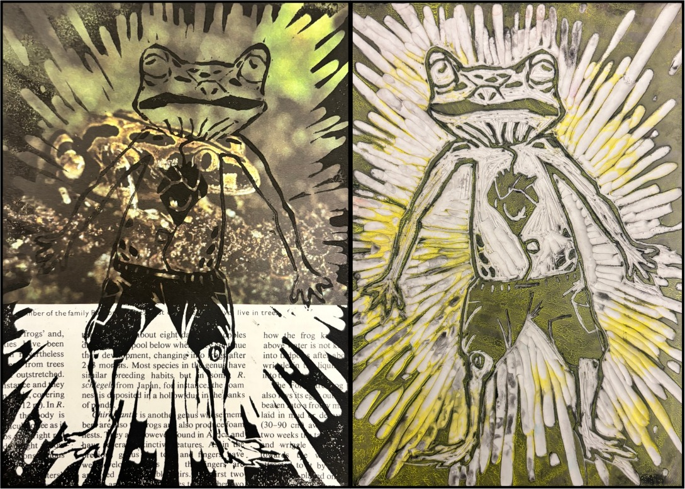
Final print (left), linoleum block (right); Glass Frog anatomy represents suppression of childhood (tadpole in heart) into the "core" of the body; subject illuminated from behind to reveal what is hidden inside.
Actaeon the Hunter, 2026
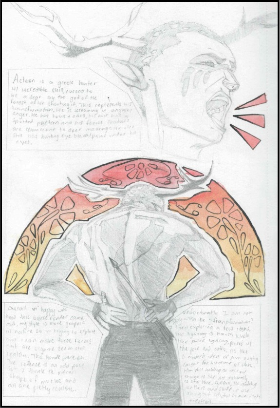
Depicts Actaeon, a Greek hunter who saw Artemis bathing and was subsequently punished by being transformed into a deer; the form explores the guilt and pain of punishment as well as the attempt to maintain identity in change; explores the power of nature to heal and the ability of man to resist.
Music is Life, 2026
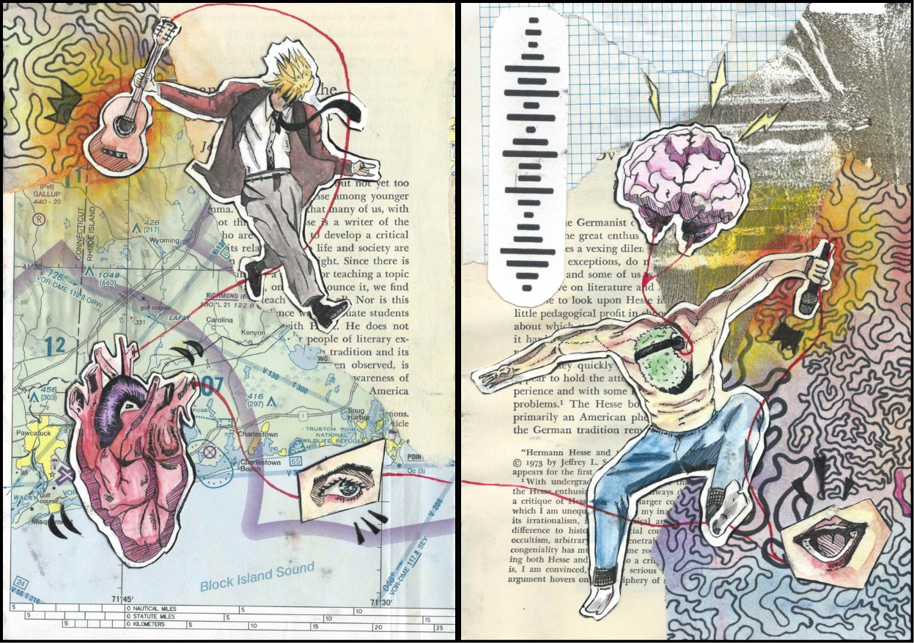
Collage work; explores the connection between the body and the emotion of music.
Color of Heat, 2026
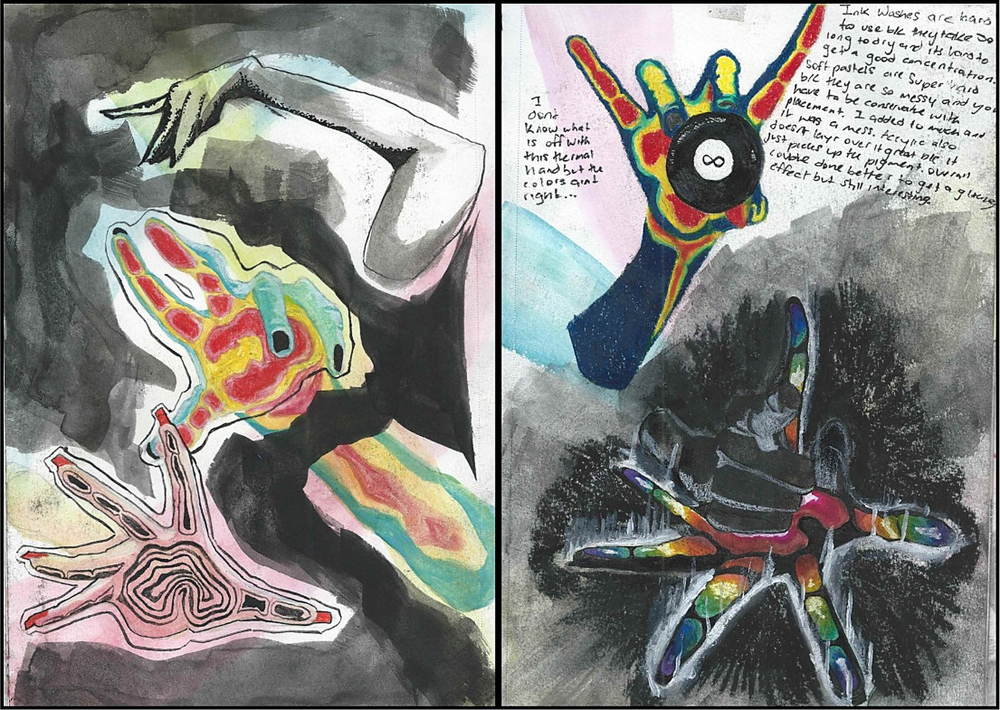
Explores mixed media (dip pen, India ink, watercolor, soft pastel, alcohol marker, colored pencil); explores the way color can portray temperature, light, and emotion in skin; anatomy practice.
Flight in Days, 2026
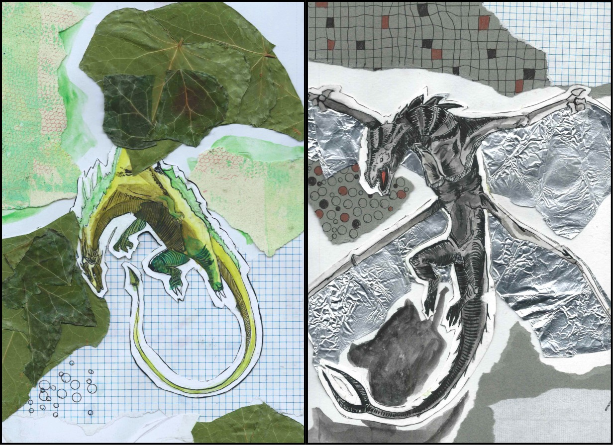
Collage work; dragons' wings made with leaves (left) and aluminum foil (right), to juxtapose nature versus machine.
Girl with Red, 2026
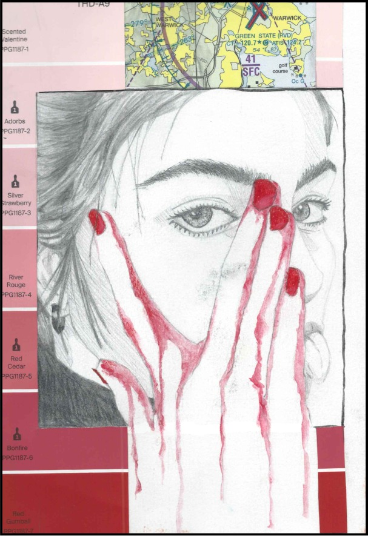
Collage work; a woman is depicted with flowing red liquid giving the impression of a hand; maps, red coloring, and a covered face suggest a secret.
Queen's Gambit, 2024
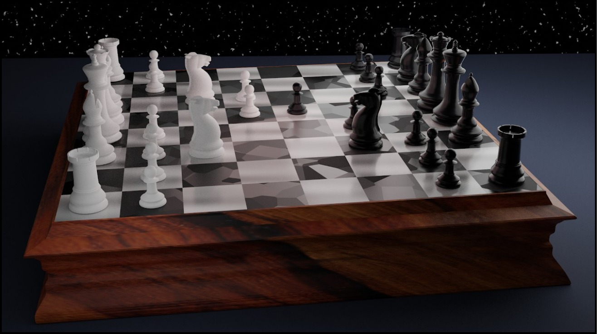
3D render via Blender; full model and render created by me; depicts infamous Queen's Gambit scene.
STRIKE!, 2024
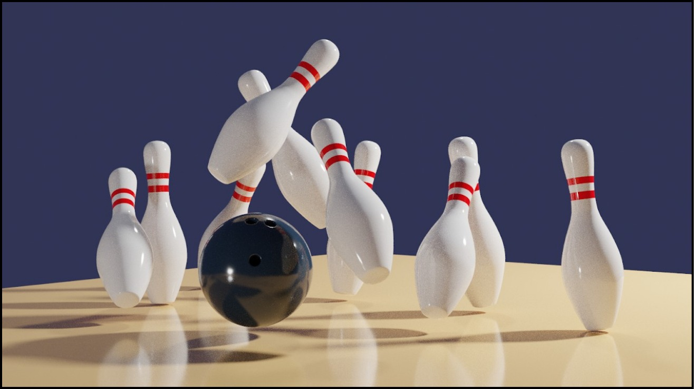
3D render via Blender; full model and render created by me; depicts dynamic bowling strike.
Blonde, 2025
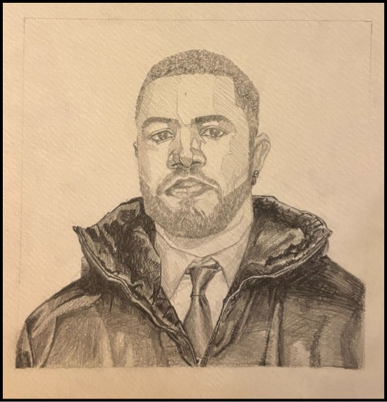
Portrait of Frank Ocean in my stylized form; it contains inspiration from the works of Japanese animated media.
Symbol of Hope, 2025
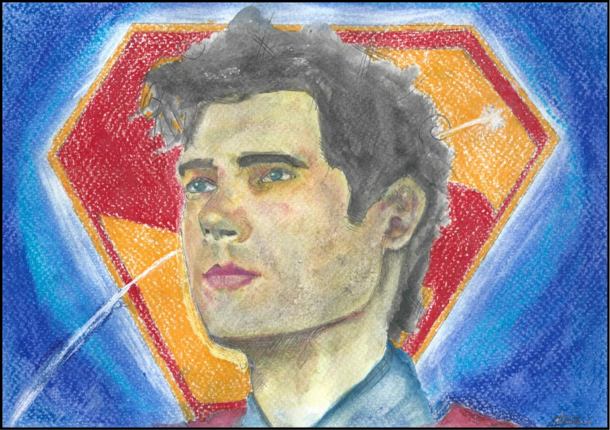
Portrait of David Corenswet as Superman; explored watercolor layering in red, yellow, then blue to build skin tone; soft pastel used to create a gradient in the background.
Dwayne "The Rock" Johnson, 2023
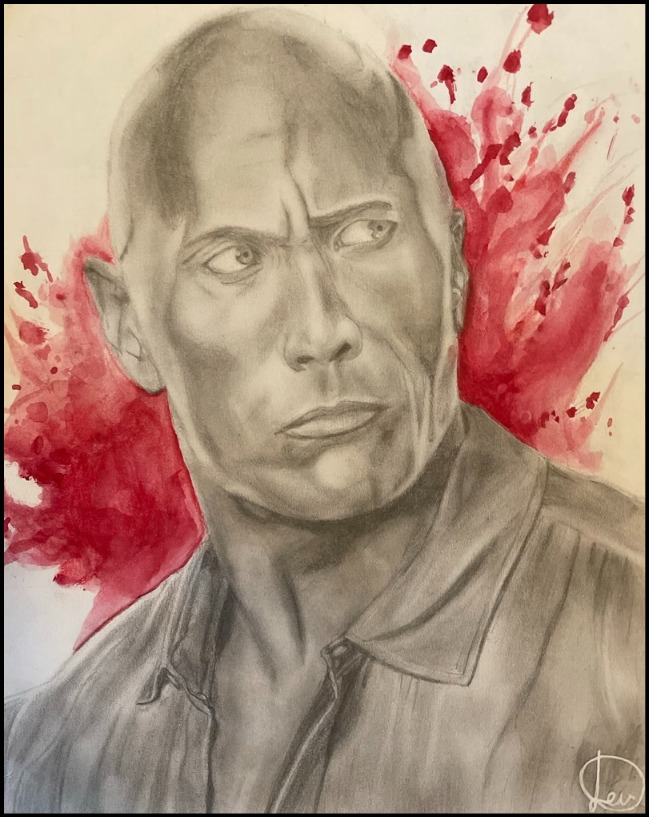
Portrait of Dwayne Johnson; sketch pencils and watercolor; explores rendering of face and clothing.
Short n' Sweet, 2025
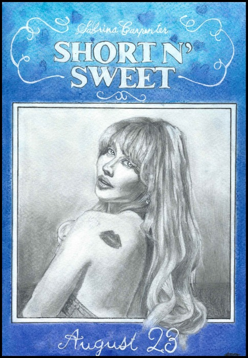
Portrait of Sabrina Carpenter; soft pastel used to create heart prints in the background; sketch pencil used to render realistic hair with volume and detail.